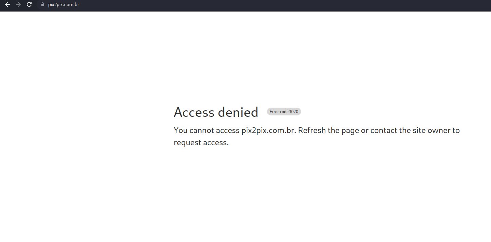
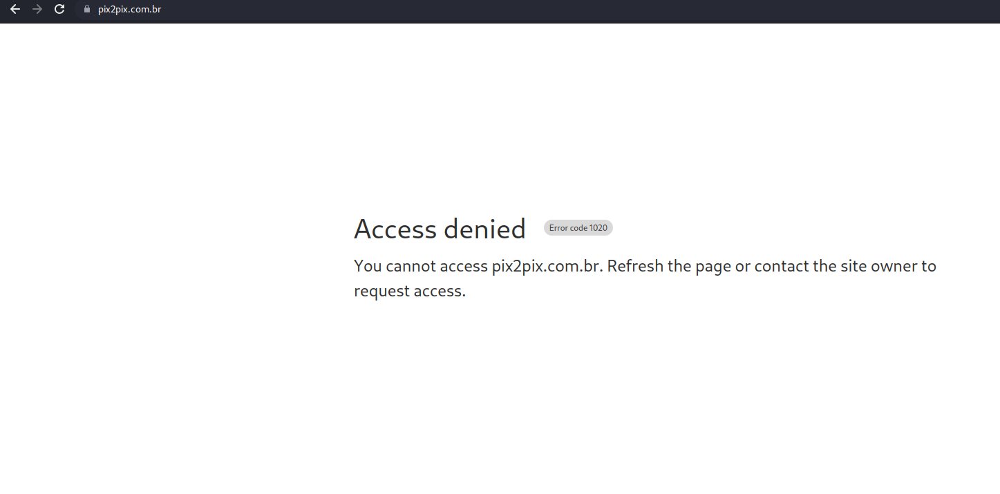

Cloudflare WAF complete bypass
Objective
Just to clarify the Objective of this paper, Cloudflare stated to me this does "not appear to be any security implications as a direct result of this behavior", so this paper is so Cloudflare WAF clients understand the criticality of NEVER, in anyway, disclose the Origin IP address, through stacktrace, DNS history, DNS enumeration, subdomain enumeration or even social engineering.
Requirements
Origin IP address
Impact
The attacker is able to bypass completely: cloudflare WAF, managed rules, ip access rules, page rules, cache
All this with the bonus of not being logged on the target waf in anyway
Being able to HTTP DOS, ignore any WAF restrictions, and test/exploit any vulnerabilities that would otherwise be blocked by the managed rules.
mitigations
* Rotate your IP address and make the possible and impossible to never leak the Origin IP address
* Use a custom authenticated Origin pull certificate (Enterprise only) (not tested)
* Use a cloudflare tunnel and NEVER leak the cname
Walkthrough
Initial state
First lets enumerate all already enabled or not security layers on the attacked application:
UFW with default incoming block, with those exceptions:
Authenticated origin pull not configured, cloudflare edge certificate being used:
 Only one cloudflare DNS entry, proxyng traffic to the attacked application. (Also note this account email is "@hotmail.com")
Only one cloudflare DNS entry, proxyng traffic to the attacked application. (Also note this account email is "@hotmail.com")
 SSL/TLS on Full (strict) since is using a Edge certificate
SSL/TLS on Full (strict) since is using a Edge certificate
 Initially desactivated Authenticated Origin Pulls
Initially desactivated Authenticated Origin Pulls
 No enabled WAF rules
No enabled WAF rules
 And here is the webpage:
And here is the webpage:
 Lets setup a WAF rule to bypass as a example:
The rule:
Turning it on:
Lets setup a WAF rule to bypass as a example:
The rule:
Turning it on:
 Testing the rule:

Testing the rule:

Bypassing UFW
On this step i will show how to bypass the Firewall IPTables rules (UFW)
As stated before, as a requirement for this bypass you need to know/discover the Origin IP fo the target in one of the many possivle ways, this screenshot shows, a DNS entry on another domain, another account (@gmail.com) to the same Origin IP.
 SSL/TLS need to be setup to "Full" since the Edge certificate is from another account
SSL/TLS need to be setup to "Full" since the Edge certificate is from another account
 For now the Authenticated Origin Pull will be off
No WAF rules:
No HTTP DOS protection:
For now the Authenticated Origin Pull will be off
No WAF rules:
No HTTP DOS protection:
 Since we will be talking to the IP through cloudflare, the IP IS IN THE UFW LIST already, since this attacked account has no security layers from cloudflare enabled, we are able to bypass the "block all" cloudflare waf rule as well any of the already stated cloudflare features (cloudflare WAF, managed rules, ip access rules, page rules, cache), not being logged in the waf, because the logs will be on the attacker own account.
Since we will be talking to the IP through cloudflare, the IP IS IN THE UFW LIST already, since this attacked account has no security layers from cloudflare enabled, we are able to bypass the "block all" cloudflare waf rule as well any of the already stated cloudflare features (cloudflare WAF, managed rules, ip access rules, page rules, cache), not being logged in the waf, because the logs will be on the attacker own account.

Bypassing Authenticated Origin Pulls
One of the security layers recomended by cloudflare to protect the Origin server are the "Authenticated Origin pulls", so lets activate it.
Setting up apache
 Enabling on cloudflare
Enabling on cloudflare
 Temporarily disabling the WAF rule for testing
Temporarily disabling the WAF rule for testing
 WebPage succesfully loaded
WebPage succesfully loaded
 enabling the rule
Being blocked by the rule
enabling the rule
Being blocked by the rule
 Lets open the attacker URL again and see what happens:
The problem is, non enterprise accounts, and even probaly most enterprise accounts that use authenticated origin pull, use cloudflare recommended certificate (https://developers.cloudflare.com/ssl/static/authenticated_origin_pull_ca.pem), so:
Enabling Authenticated pull on the attacker account also:
Acessing the attacker website, bypassing both authenticated origin pull and the WAF rule:
Lets open the attacker URL again and see what happens:
The problem is, non enterprise accounts, and even probaly most enterprise accounts that use authenticated origin pull, use cloudflare recommended certificate (https://developers.cloudflare.com/ssl/static/authenticated_origin_pull_ca.pem), so:
Enabling Authenticated pull on the attacker account also:
Acessing the attacker website, bypassing both authenticated origin pull and the WAF rule:
 Since the certificate is the same for almost all Authenticated Origin Pull, enabling Authenticated origin pull on the attacker account is enough.
If you use Cloudflare WAF, and cant periodically rotate IP at the same time you are sure the IP will not leak by the application or subdomains, use a custom authenticated pull certificate or use a cloudflare tunnel, you are facing a real risk of a attacker being able to complete ignore any security layers on cloudflare application, from WAF vulnerability mitigations to HTTP DOS.
Or not, since cloudflare is the product owner and stated this has no impact, they are probaly right and i am probaly wrong.
Since the certificate is the same for almost all Authenticated Origin Pull, enabling Authenticated origin pull on the attacker account is enough.
If you use Cloudflare WAF, and cant periodically rotate IP at the same time you are sure the IP will not leak by the application or subdomains, use a custom authenticated pull certificate or use a cloudflare tunnel, you are facing a real risk of a attacker being able to complete ignore any security layers on cloudflare application, from WAF vulnerability mitigations to HTTP DOS.
Or not, since cloudflare is the product owner and stated this has no impact, they are probaly right and i am probaly wrong.
Protect and hide your Origin Server IP by any cost, and rotate periodically, or someone could just start mapping the entire IPv4 space and find you